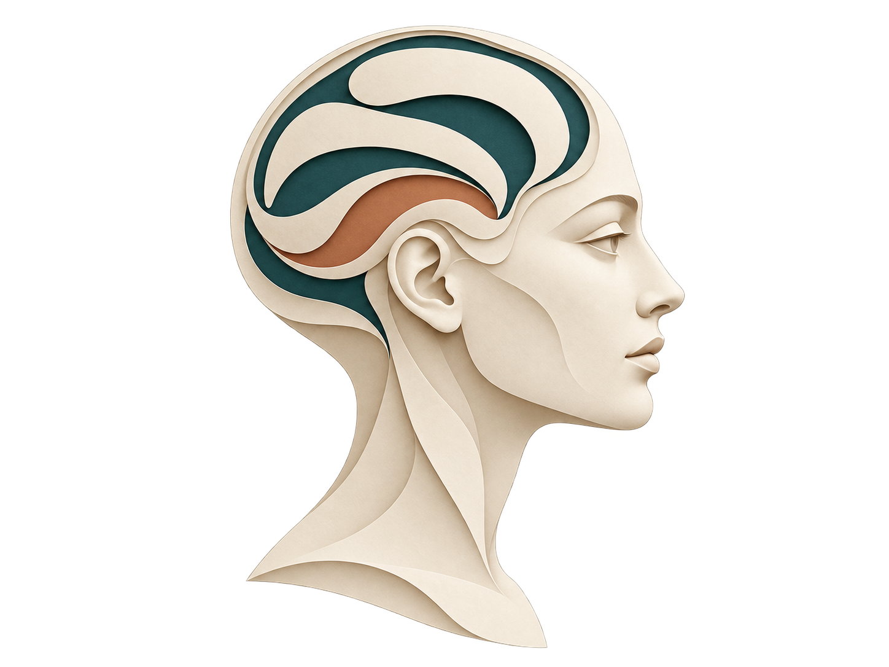

Research / Overview

Patterns in space. States in time.
I work with brain imaging data at two scales: spatial patterns that link early development with later vulnerability, and changing patterns of activity during sleep.
Current questions
Show the question before the machinery.
Each project page starts with the scientific question, then follows the data through a short visual workflow. The technical layer explains the modeling choices for readers who want to go further.
Both projects are ongoing. The diagrams explain the methods. The FILO page also includes paired input maps from the analysis, with their source and scope identified in the caption.